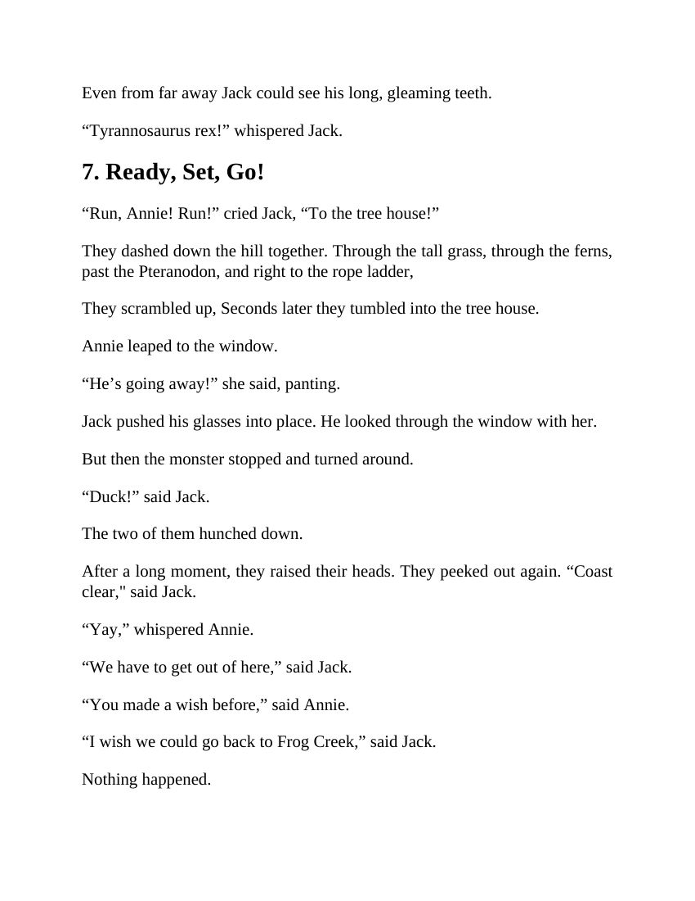
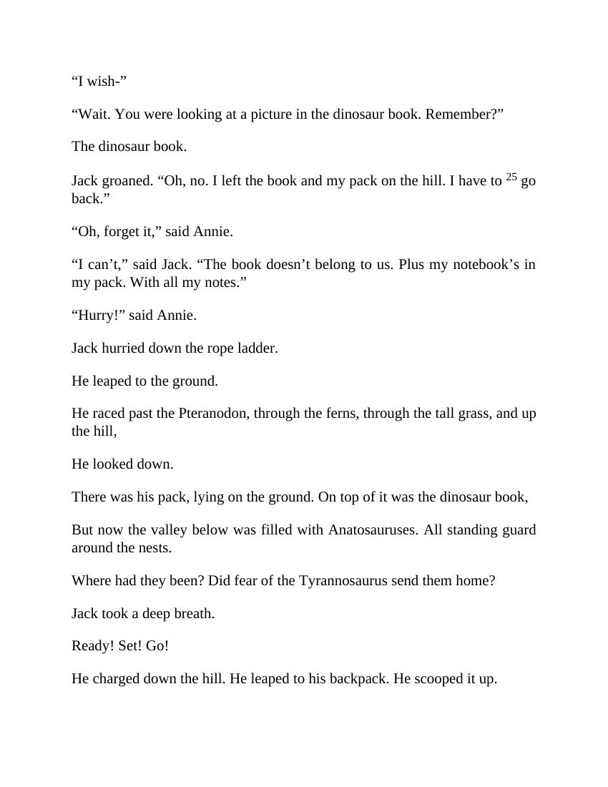
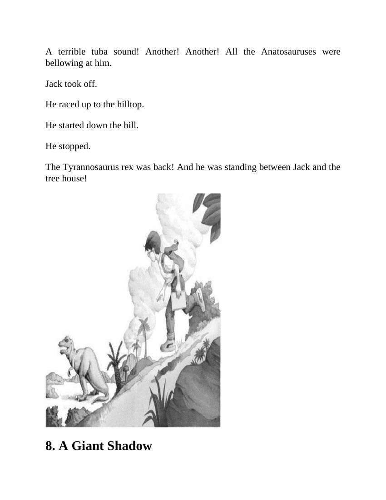
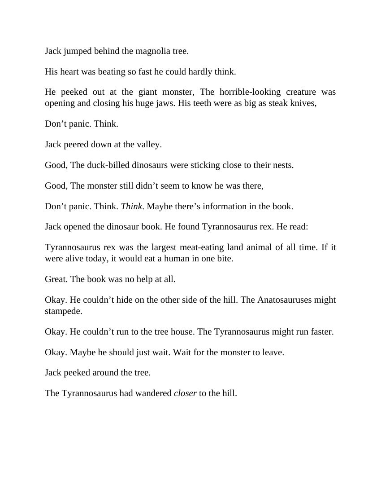

ONE WEEK · ONE CHAPTER
🌳 神奇树屋
Magic Tree House #1 · Dinosaurs Before Dark · 恐龙谷历险记
跟着杰克和安妮爬上树屋，
看动画、听故事、记生词、配配音，最后把整章读出来。
看动画 · 听三遍 · 记生词 · 配配音 · 读一章
1先看视频，认识这个故事 🎬
这一章讲什么？（看完视频前先保密 😄）太阳快落山时，安妮喊着"有怪物！"跑进了树林，
哥哥杰克只好追进去。树林深处有一棵高高的橡树，树上挂着一个神秘树屋——里面居然堆满了书！
就在这一章的最后，安妮抬头看见了窗外那个长翅膀的大家伙……冒险，从这里开始。
🎞️ 已嵌入：第7章动画片《Ready, Set, Go!》（3分08秒），点播放即可观看。
👀 看视频任务：看完后不看书，用中文回答——① 树屋是谁先发现的？② 树屋里堆满了什么？③ 杰克为什么最后也爬上去了？答得上来，就通关！
🎉 太棒了！故事已经装进小脑袋啦！
2跟着听力文本，泛听三遍 🎧
🎵 第一遍 · 听个大概
不看文本，闭上眼睛听。听完只回答一个问题：他们最后到树屋里了吗？1
2
3
🔍 第二遍 · 边听边对
打开下面的原书 PDF（第 4 页起），听着音频用手指跟着字走。听到这些词就打个勾：creek / monster / rope ladder / oak tree / whisper / be filled with🗣️ 第三遍 · 小声跟读
音频读到哪儿，嘴巴轻轻跟到哪儿（shadowing）。不用完美，跟上节奏就赢！🆘 卡住了？
回到阶段1再看一遍动画片画面，或翻开下面的原书 PDF 对照文字。 （可选：若装了双语讲解音频，会出现在这里）🔊 章节音频播放器（已内嵌 · 第一章 2分50秒）
💡 听完一遍就在这里点一下计数：
1
2
3
📄 听力文本区（原书 PDF 已嵌入 · 第一章从第 4 页开始）
📖 在网页里直接对照原书




如果浏览器没有显示 PDF：点这里在新窗口打开。第 30 页是「7. Ready, Set, Go!」。
✏️ 也可以把自己整理的重点句子粘贴在下面，会自动保存在本机：
🎉 三遍下来，耳朵已经认识这个故事了！
3生词乐园 📚
先慢慢记，再玩「看图选词」闯关。不着急，看多久都可以。
第 1 / 12 个 · 看图片、读例句，记住它 😊
creek
小溪
They ran past a creek in the woods.
他们跑过树林里的一条小溪。
他们跑过树林里的一条小溪。
第 1 / 12 题 · 得分 0
…
① 选出它的英文单词
② 选出它的中文意思
先选英文，再选中文～
📋 本章完整词表（36 词，选看）
🎉 看图选词通关，12 个生词全部收服！
4小小配音员 🎙️
怎么玩：原版动画的英文旁白被切成了 一句一句。每句先点「🔊 听原句」，
再点「🎙 配这句」——配音时视频静音，你的声音就是动画片的声音！
全部配好后点「🎬 播放我的配音版」，看整部由你配音的动画片！
🎞️ 画面：第一章原版动画 · 英文旁白 · 全长 2:49。配音时自动静音。
准备就绪 —— 先听一句，再配一句！
🎉 杰克和安妮听到你的声音，一定很想带你一起去恐龙谷！
5终极挑战：完整朗读一遍 📖
这一周的视频、耳朵、游戏、配音，都是为了这一刻：捧起书，把 Chapter 1 从头到尾读一遍！
读之前先听一遍原声"热耳朵"，然后按下录音，大声读出来。
🔖 跟着原声读：读到哪句，哪句就点亮（中文在下面对着看）
准备就绪 —— 想好了就按下录音按钮
🎧 回放你的朗读
给自己打个分吧——你读得比第一遍泛听时好多了，对不对？
★★★★★
「转发」可直接分享到微信等 App（电脑浏览器不支持时，会自动把 .wav 音频文件保存到电脑，再手动发送即可）。
🎉 第五章……不对，第一章，完全攻略！下周见！
🏆🦕🌳
Chapter 1 攻略完成！
你已经是神奇的树屋冒险家了。下周同一时间，树屋会带你去恐龙谷……
（下一章：Chapter 2 - The Monster？不，先回到 Chapter 1 的结尾看个究竟 😄）
别忘了把你的配音和朗读分享给家人听一听！